# load libraries used in analysis
library(tidyverse)
library(patchwork)
library(jtools)
library(kableExtra)Statistical Analysis
# read in data generated from geospatial analysis
blackout_census_data <- read_csv("data/census_tract_blackout_data_df.csv")Linear Regression
Linear regression was used to model the relationship between percent of houses that lost power and selected data from the U.S. Census Bureau’s American Community Survey (ACS).
Race
Percent white
# linear regression model
model_pct_white <- lm(data = blackout_census_data, pct_houses_that_lost_power ~ pct_white)
#plot
plot_model_pct_white <- ggplot(data = blackout_census_data, aes(x = pct_white, y = pct_houses_that_lost_power)) +
geom_point(size = 0.5) +
geom_smooth(method = lm, formula = y~x, se = FALSE) +
theme_classic() +
labs(x = "% white", y = "% of houses that lost power")
plot_model_pct_white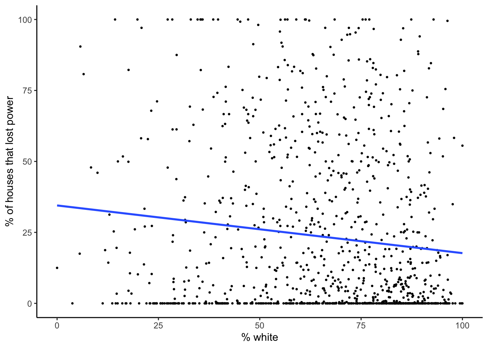
Code
# model summary
summary_model_pct_white <- summary(model_pct_white)
# extract model coefficients
slope_coef_white <- round(summary_model_pct_white$coefficients["pct_white", "Estimate"], digits = 3)
std_err_white <- round(summary_model_pct_white$coefficients["pct_white", "Std. Error"], digits = 3)
p_value_white <- format(summary_model_pct_white$coefficients["pct_white", "Pr(>|t|)"], scientific = FALSE, digits = 2)
# confidence intervals
ci_95_lower_white <- round(confint(model_pct_white, level = 0.95)[2, 1], digits = 3)
ci_95_upper_white <- round(confint(model_pct_white, level = 0.95)[2, 2], digits = 3)Percent black
# linear regression model
model_pct_black <- lm(data = blackout_census_data, pct_houses_that_lost_power ~ pct_black)
# plot
plot_model_pct_black <- ggplot(data = blackout_census_data, aes(x = pct_black, y = pct_houses_that_lost_power)) +
geom_point(size = 0.5) +
geom_smooth(method = lm, formula = y~x, se = FALSE) +
theme_classic() +
labs(x = "% black", y = "% of houses that lost power")
plot_model_pct_black
Code
# model summary
summary_model_pct_black <- summary(model_pct_black)
# extract model coefficients
slope_coef_black <- round(summary_model_pct_black$coefficients["pct_black", "Estimate"], digits = 3)
std_err_black <- round(summary_model_pct_black$coefficients["pct_black", "Std. Error"], digits = 3)
p_value_black <- format(summary_model_pct_black$coefficients["pct_black", "Pr(>|t|)"], scientific = FALSE, digits = 2)
# confidence intervals
ci_95_lower_black <- round(confint(model_pct_black, level = 0.95)[2, 1], digits = 3)
ci_95_upper_black <- round(confint(model_pct_black, level = 0.95)[2, 2], digits = 3)Percent native american
# linear regression model
model_pct_am_native <- lm(data = blackout_census_data, pct_houses_that_lost_power ~ pct_am_native)
# plot
plot_model_pct_am_native <- ggplot(data = blackout_census_data, aes(x = pct_am_native, y = pct_houses_that_lost_power)) +
geom_point(size = 0.5) +
geom_smooth(method = lm, formula = y~x, se = FALSE) +
theme_classic() +
labs(x = "% native american", y = "% of houses that lost power")
plot_model_pct_am_native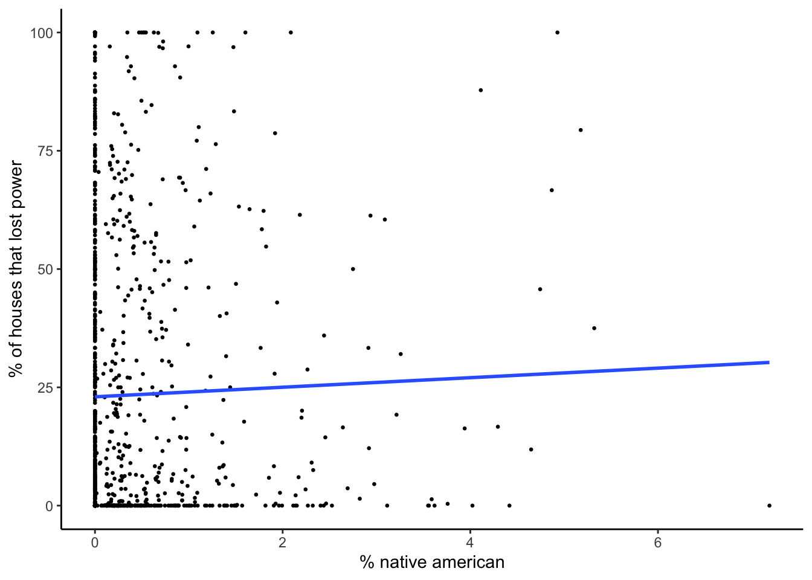
Code
# model summary
summary_model_pct_am_native <- summary(model_pct_am_native)
# extract model coefficients
slope_coef_am_native <- round(summary_model_pct_am_native$coefficients["pct_am_native", "Estimate"], digits = 3)
std_err_am_native <- round(summary_model_pct_am_native$coefficients["pct_am_native", "Std. Error"], digits = 3)
p_value_am_native <- format(summary_model_pct_am_native$coefficients["pct_am_native", "Pr(>|t|)"], scientific = FALSE, digits = 2)
# confidence intervals
ci_95_lower_am_native <- round(confint(model_pct_am_native, level = 0.95)[2, 1], digits = 3)
ci_95_upper_am_native <- round(confint(model_pct_am_native, level = 0.95)[2, 2], digits = 3)Percent asian
# linear regression model
model_pct_asian <- lm(data = blackout_census_data, pct_houses_that_lost_power ~ pct_asian)
# plot
plot_model_pct_asian <- ggplot(data = blackout_census_data, aes(x = pct_asian, y = pct_houses_that_lost_power)) +
geom_point(size = 0.5) +
geom_smooth(method = lm, formula = y~x, se = FALSE) +
theme_classic() +
labs(x = "% asian", y = "% of houses that lost power")
plot_model_pct_asian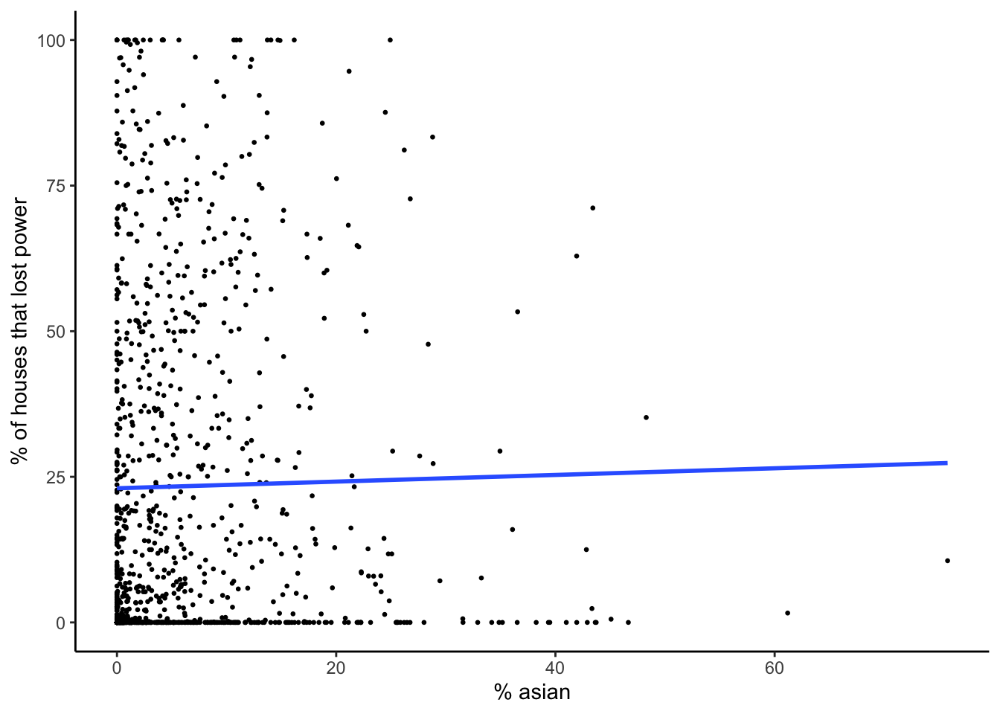
Code
# model summary
summary_model_pct_asian <- summary(model_pct_asian)
# extract model coefficients
slope_coef_asian <- round(summary_model_pct_asian$coefficients["pct_asian", "Estimate"], digits = 3)
std_err_asian <- round(summary_model_pct_asian$coefficients["pct_asian", "Std. Error"], digits = 3)
p_value_asian <- format(summary_model_pct_asian$coefficients["pct_asian", "Pr(>|t|)"], scientific = FALSE, digits = 2)
# confidence intervals
ci_95_lower_asian <- round(confint(model_pct_asian, level = 0.95)[2, 1], digits = 3)
ci_95_upper_asian <- round(confint(model_pct_asian, level = 0.95)[2, 2], digits = 3)Percent hispanic / latino
# linear regression model
model_pct_hispanic_latino <- lm(data = blackout_census_data, pct_houses_that_lost_power ~ pct_hispanic_latino)
# plot
plot_model_pct_hispanic_latino <- ggplot(data = blackout_census_data, aes(x = pct_hispanic_latino, y = pct_houses_that_lost_power)) +
geom_point(size = 0.5) +
geom_smooth(method = lm, formula = y~x, se = FALSE) +
theme_classic() +
labs(x = "% hispanic / latino", y = "% of houses that lost power")
plot_model_pct_hispanic_latino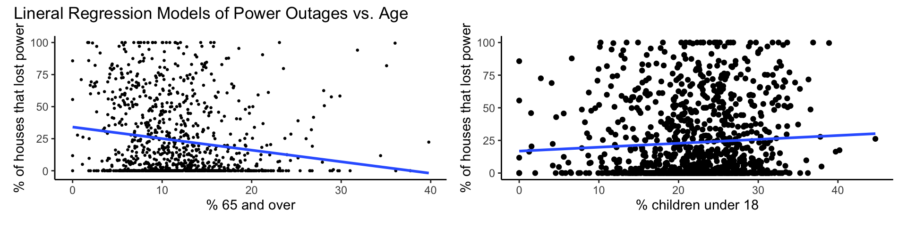
Code
# model summary
summary_model_pct_hispanic_latino <- summary(model_pct_hispanic_latino)
# extract model coefficients
slope_coef_hispanic_latino <- round(summary_model_pct_hispanic_latino$coefficients["pct_hispanic_latino", "Estimate"], digits = 3)
std_err_hispanic_latino <- round(summary_model_pct_hispanic_latino$coefficients["pct_hispanic_latino", "Std. Error"], digits = 3)
p_value_hispanic_latino <- format(summary_model_pct_hispanic_latino$coefficients["pct_hispanic_latino", "Pr(>|t|)"], scientific = FALSE, digits = 2)
# confidence intervals
ci_95_lower_hispanic_latino <- round(confint(model_pct_hispanic_latino, level = 0.95)[2, 1], digits = 3)
ci_95_upper_hispanic_latino <- round(confint(model_pct_hispanic_latino, level = 0.95)[2, 2], digits = 3)Race summary plots
model_plots_race <- (plot_model_pct_white | plot_model_pct_black | plot_model_pct_am_native) /
(plot_model_pct_asian | plot_model_pct_hispanic_latino | plot_spacer()) +
plot_annotation(title = "Lineral Regression Models of Power Outages vs. Race")
model_plots_race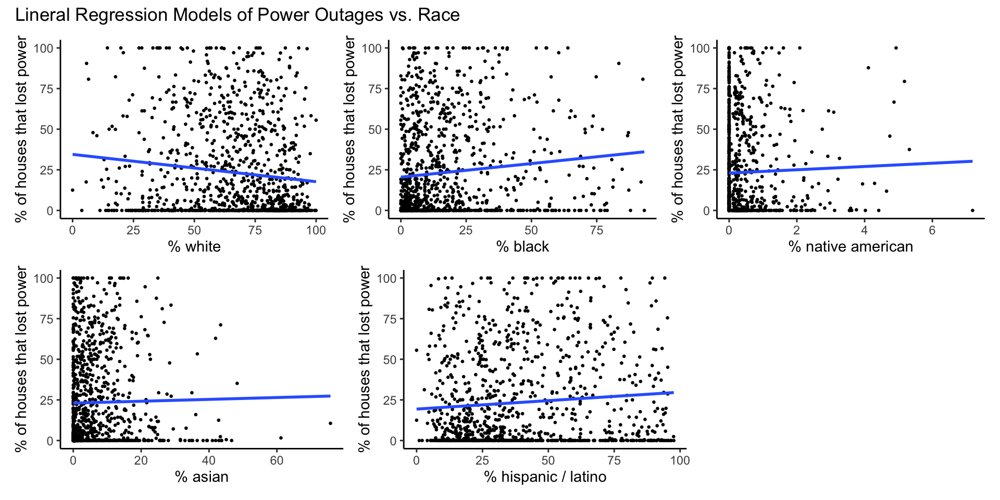
Age
Percent 65 and older
# linear regression model
model_pct_65_and_over <- lm(data = blackout_census_data, pct_houses_that_lost_power ~ pct_65_and_over)
# plot
plot_model_pct_65_and_over <- ggplot(data = blackout_census_data, aes(x = pct_65_and_over, y = pct_houses_that_lost_power)) +
geom_point(size = 0.5) +
geom_smooth(method = lm, formula = y~x, se = FALSE) +
theme_classic() +
labs(x = "% 65 and over", y = "% of houses that lost power")
plot_model_pct_65_and_over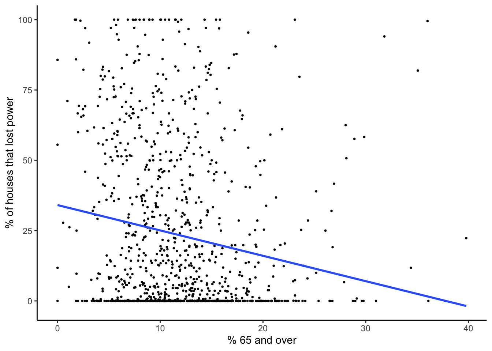
Code
# model summary
summary_model_pct_65_and_over <- summary(model_pct_65_and_over)
# extract model coefficients
slope_coef_pct_65_and_over <- round(summary_model_pct_65_and_over$coefficients["pct_65_and_over", "Estimate"], digits = 3)
std_err_pct_65_and_over <- round(summary_model_pct_65_and_over$coefficients["pct_65_and_over", "Std. Error"], digits = 3)
p_value_pct_65_and_over <- format(summary_model_pct_65_and_over$coefficients["pct_65_and_over", "Pr(>|t|)"], scientific = FALSE, digits = 2)
# confidence intervals
ci_95_lower_pct_65_and_over <- round(confint(model_pct_65_and_over, level = 0.95)[2, 1], digits = 3)
ci_95_upper_pct_65_and_over <- round(confint(model_pct_65_and_over, level = 0.95)[2, 2], digits = 3)Percent children under 18
# linear regression model
model_pct_children_under_18 <- lm(data = blackout_census_data, pct_houses_that_lost_power ~ pct_children_under_18)
# plot
plot_model_pct_children_under_18 <- ggplot(data = blackout_census_data, aes(x = pct_children_under_18, y = pct_houses_that_lost_power)) +
geom_point() +
geom_smooth(method = lm, formula = y~x, se = FALSE) +
theme_classic() +
labs(x = "% children under 18", y = "% of houses that lost power")
plot_model_pct_children_under_18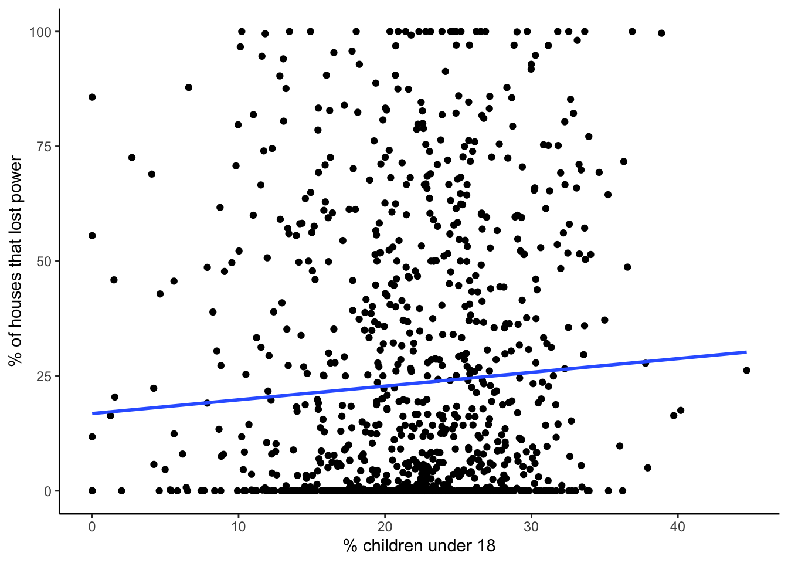
Code
# model summary
summary_model_pct_children_under_18 <- summary(model_pct_children_under_18)
# extract model coefficients
slope_coef_children_under_18 <- round(summary_model_pct_children_under_18$coefficients["pct_children_under_18", "Estimate"], digits = 3)
std_err_children_under_18 <- round(summary_model_pct_children_under_18$coefficients["pct_children_under_18", "Std. Error"], digits = 3)
p_value_children_under_18 <- format(summary_model_pct_children_under_18$coefficients["pct_children_under_18", "Pr(>|t|)"], scientific = FALSE, digits = 2)
# confidence intervals
ci_95_lower_children_under_18 <- round(confint(model_pct_children_under_18, level = 0.95)[2, 1], digits = 3)
ci_95_upper_children_under_18 <- round(confint(model_pct_children_under_18, level = 0.95)[2, 2], digits = 3)Age summary plots
model_plots_age <- (plot_model_pct_65_and_over | plot_model_pct_children_under_18) +
plot_annotation(title = "Lineral Regression Models of Power Outages vs. Age")
model_plots_age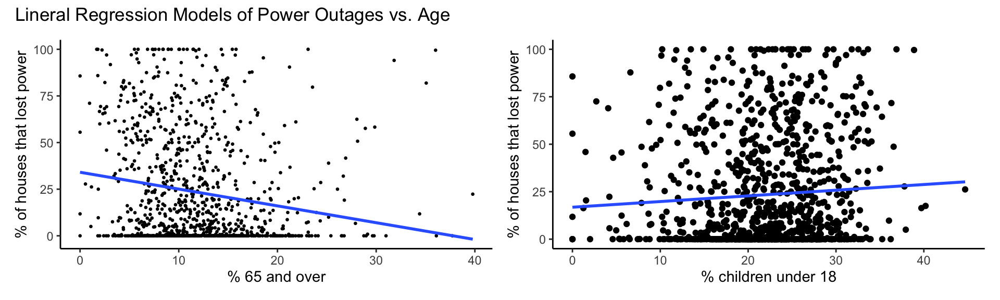
Income
Percent households below poverty
# linear regression model
model_pct_households_below_poverty <- lm(data = blackout_census_data, pct_houses_that_lost_power ~ pct_households_below_poverty)
# plot
plot_model_pct_households_below_poverty <- ggplot(data = blackout_census_data, aes(x = pct_households_below_poverty, y = pct_houses_that_lost_power)) +
geom_point(size = 0.5) +
geom_smooth(method = lm, formula = y~x, se = FALSE) +
theme_classic() +
labs(x = "% households below poverty", y = "% of houses that lost power")
plot_model_pct_households_below_poverty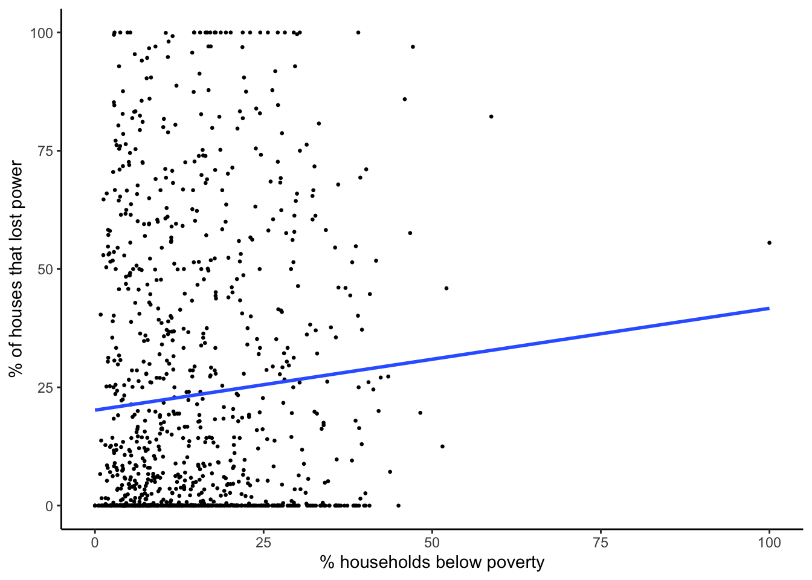
Code
# model summary
summary_model_pct_households_below_poverty <- summary(model_pct_households_below_poverty)
# extract model coefficients
slope_coef_households_below_poverty <- round(summary_model_pct_households_below_poverty$coefficients["pct_households_below_poverty", "Estimate"], digits = 3)
std_err_households_below_poverty <- round(summary_model_pct_households_below_poverty$coefficients["pct_households_below_poverty", "Std. Error"], digits = 3)
p_value_households_below_poverty <- format(summary_model_pct_households_below_poverty$coefficients["pct_households_below_poverty", "Pr(>|t|)"], scientific = FALSE, digits = 2)
# confidence intervals
ci_95_lower_households_below_poverty <- round(confint(model_pct_households_below_poverty, level = 0.95)[2, 1], digits = 3)
ci_95_upper_households_below_poverty <- round(confint(model_pct_households_below_poverty, level = 0.95)[2, 2], digits = 3)Median income
# linear regression model
model_median_income <- lm(data = blackout_census_data, pct_houses_that_lost_power ~ median_income)
# plot
plot_model_median_income <- ggplot(data = blackout_census_data, aes(x = median_income, y = pct_houses_that_lost_power)) +
geom_point(size = 0.5) +
geom_smooth(method = lm, formula = y~x, se = FALSE) +
theme_classic() +
labs(x = "median income", y = "% of houses that lost power")
plot_model_median_income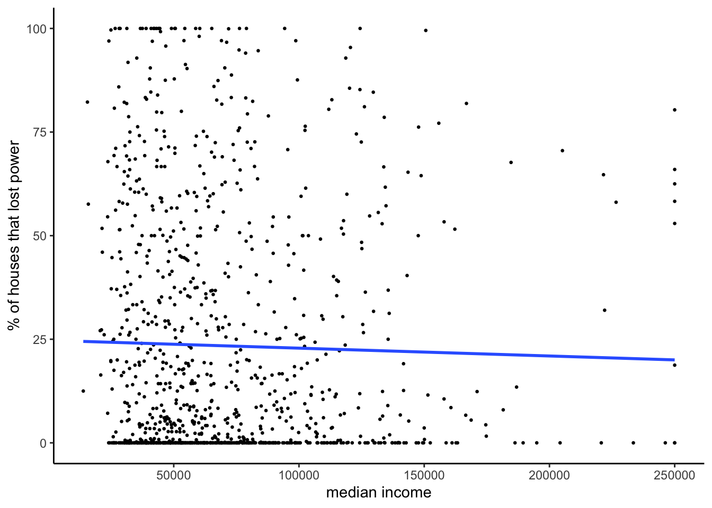
Code
# model summary
summary_model_median_income <- summary(model_median_income)
# extract model coefficients
slope_coef_median_income <- round(summary_model_median_income$coefficients["median_income", "Estimate"], digits = 3)
std_err_median_income <- round(summary_model_median_income$coefficients["median_income", "Std. Error"], digits = 3)
p_value_median_income <- format(summary_model_median_income$coefficients["median_income", "Pr(>|t|)"], scientific = FALSE, digits = 2)
# confidence intervals
ci_95_lower_median_income <- round(confint(model_median_income, level = 0.95)[2, 1], digits = 3)
ci_95_upper_median_income <- round(confint(model_median_income, level = 0.95)[2, 2], digits = 3)Income summary plots
model_plots_income <- (plot_model_pct_households_below_poverty | plot_model_median_income) +
plot_annotation(title = "Lineral Regression Models of Power Outages vs. Income")
model_plots_income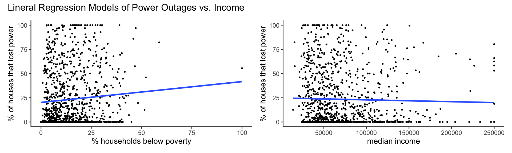
Results
race_model_summary <- plot_summs(model_pct_white, model_pct_black, model_pct_am_native, model_pct_asian, model_pct_hispanic_latino,
inner_ci_level = 0.9,
model.names = c("white", "black", "native american", "asian", "hispanic/latino"))
race_model_summary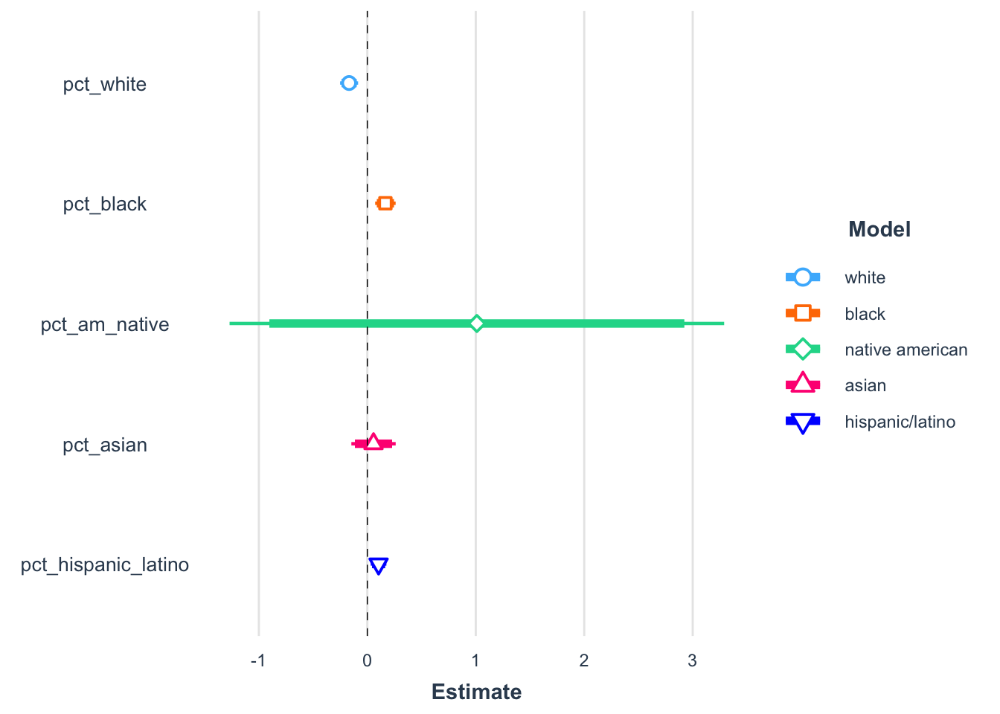
age_model_summary <-plot_summs(model_pct_65_and_over, model_pct_children_under_18,
inner_ci_level = 0.95,
model.names = c("over 65", "under 18"))
age_model_summary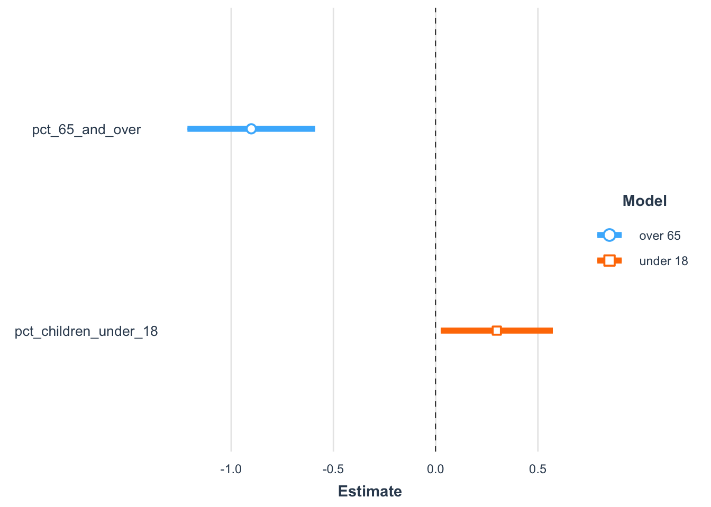
income_model_summary <-plot_summs(model_pct_households_below_poverty, model_median_income,
inner_ci_level = 0.95,
model.names = c("poverty", "median income"))
income_model_summary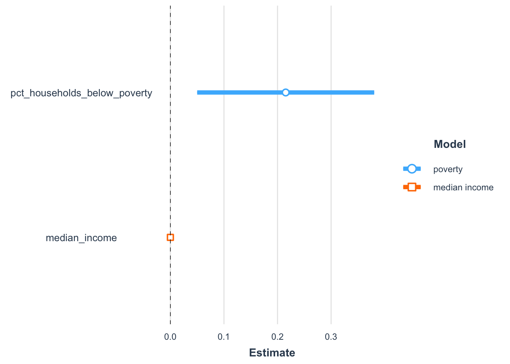
Code
model_summary_df <- data.frame(model_name = c("white", "black", "native american", "asian", "hispanic / latino", "65 and over", "18 and younger", "poverty", "median income"),
slope_coef = c(slope_coef_white, slope_coef_black, slope_coef_am_native, slope_coef_asian, slope_coef_hispanic_latino, slope_coef_pct_65_and_over, slope_coef_children_under_18, slope_coef_households_below_poverty, slope_coef_median_income),
std_err = c(std_err_white, std_err_black, std_err_am_native, std_err_asian, std_err_hispanic_latino, std_err_pct_65_and_over, std_err_children_under_18, std_err_households_below_poverty, std_err_median_income),
p_value = c(p_value_white, p_value_black, p_value_am_native, p_value_asian, p_value_hispanic_latino, p_value_pct_65_and_over, p_value_children_under_18, p_value_households_below_poverty, p_value_median_income),
ci_95_lower = c(ci_95_lower_white, ci_95_lower_black, ci_95_lower_am_native, ci_95_lower_asian, ci_95_lower_hispanic_latino, ci_95_lower_pct_65_and_over, ci_95_lower_children_under_18, ci_95_lower_households_below_poverty, ci_95_lower_median_income),
ci_95_upper = c(ci_95_upper_white, ci_95_upper_black, ci_95_upper_am_native, ci_95_upper_asian, ci_95_upper_hispanic_latino, ci_95_upper_pct_65_and_over, ci_95_upper_children_under_18, ci_95_upper_households_below_poverty, ci_95_upper_median_income)) %>%
mutate(significance = case_when(
p_value < 0.05 ~ "yes",
p_value >= 0.05 ~ "no"))
model_summary_table <- model_summary_df %>%
kable(col.names = c("model name", "slope coefficent", "standard error", "p-value", "95% confidence\ninterval (lower)", "95% confidence\nintervaln(upper)", "significant\nat 5% level"),
caption = "Summary of Model Results") %>%
kable_paper()
model_summary_table| model name | slope coefficent | standard error | p-value | 95% confidence interval (lower) | 95% confidence intervaln(upper) | significant at 5% level |
|---|---|---|---|---|---|---|
| white | -0.168 | 0.042 | 0.000076 | -0.251 | -0.085 | yes |
| black | 0.167 | 0.048 | 0.00054 | 0.072 | 0.261 | yes |
| native american | 1.010 | 1.162 | 0.38 | -1.270 | 3.290 | no |
| asian | 0.057 | 0.104 | 0.58 | -0.147 | 0.261 | no |
| hispanic / latino | 0.104 | 0.037 | 0.0047 | 0.032 | 0.176 | yes |
| 65 and over | -0.902 | 0.159 | 0.000000019 | -1.214 | -0.589 | yes |
| 18 and younger | 0.299 | 0.140 | 0.033 | 0.025 | 0.573 | yes |
| poverty | 0.215 | 0.084 | 0.011 | 0.050 | 0.380 | yes |
| median income | 0.000 | 0.000 | 0.42 | 0.000 | 0.000 | no |
Discussion
Note: the purpose of this evaluation was not to predict houses that could be more likely to lose power in the future. This analysis attempts to identify disproportional vulnerabilities of the effected community.